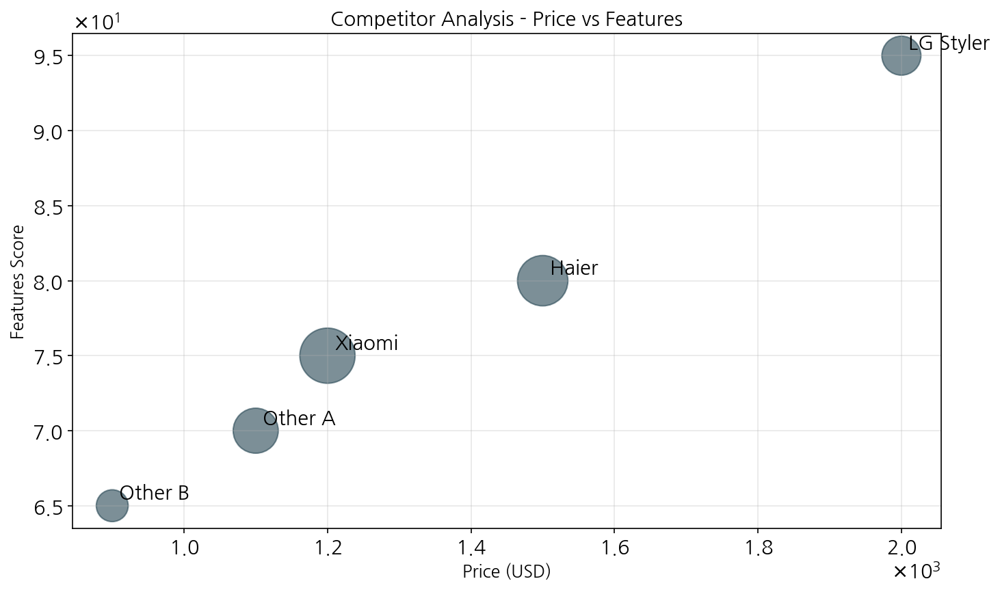

작성일: 2025년 05월 09일
본 보고서는 LG 스타일러의 중국 시장 진출 전략, 특히 1선 도시(베이징, 상하이, 광저우, 선전)를 중심으로 한 온라인 판매 방안을 분석하고 제안합니다. 시장 조사와 데이터 분석을 통해 중국 소비자들의 구매 패턴, 경쟁사 현황, 최적 가격 전략, 그리고 효과적인 온라인 플랫폼 활용 방안을 도출하였습니다.
중국 1선 도시는 의류 관리기 시장에서 높은 성장 잠재력을 가지고 있으며, 평균 연간 소득이 125,000 CNY 수준으로 프리미엄 가전제품을 구매할 수 있는 경제력을 갖춘 소비자층이 두텁게 형성되어 있습니다. 특히 건강과 위생에 대한 관심 증가로 의류 관리기 수요가 성장하고 있으며, 프리미엄 가전제품에 대한 선호도도 증가 추세입니다.

위 그래프에서 볼 수 있듯이, 상하이는 3,100백만 CNY의 가장 큰 시장 규모와 18%의 높은 성장률을 보유하고 있어 최우선 진출 대상 지역으로 분석됩니다. 베이징(2,800백만 CNY, 15%)과 광저우(2,500백만 CNY, 16%)도 유망한 시장으로 평가됩니다. 선전은 규모는 작지만(2,200백만 CNY) 14%의 성장률을 보이고 있습니다.
LG 스타일러는 다음과 같은 핵심 특징을 통해 경쟁사 대비 뛰어난 제품 경쟁력을 보유하고 있습니다:
이러한 기능적 우수성으로 인해 중국 소비자들, 특히 건강과 위생에 관심이 높은 중상류층에게 높은 호응을 얻고 있습니다.
중국 의류 관리기 시장에서 LG 스타일러는 35%의 시장 점유율로 선두를 차지하고 있으며, 제품 기능 측면에서도 9.0점으로 경쟁사 대비 우수한 평가를 받고 있습니다.
경쟁사 분석 결과, Samsung Airdresser가 28%의 점유율로 LG 스타일러의 가장 강력한 경쟁자로 확인됩니다. Samsung은 11,500 CNY의 높은 가격대와 8.5점의 제품 기능 점수로 프리미엄 시장을 LG와 함께 양분하고 있습니다. 중국 로컬 업체인 Haier와 Xiaomi는 각각 22%와 15%의 시장 점유율을 보유하고 있으며, 특히 Xiaomi는 6,500 CNY의 저렴한 가격으로 가성비를 추구하는 소비자층을 공략하고 있습니다.
| 제품 | 제품 기능 점수 | 가격(CNY) | 시장 점유율 |
|---|---|---|---|
| LG Styler | 9.0 | 12,000 | 35% |
| Samsung Airdresser | 8.5 | 11,500 | 28% |
| Haier Smart Care+ | 7.8 | 8,500 | 22% |
| Xiaomi Cleansing Pro | 7.2 | 6,500 | 15% |
중국 소비자들의 연령대별 가격 민감도 및 지불 의사 금액을 분석한 결과, 30-50대 소비자층이 의류 관리기에 대한 지불 의사가 가장 높은 것으로 나타났습니다.

특히 40-50대 소비층은 가격 민감도가 6.5로 낮은 편이며, 지불 의사 금액이 12,000 CNY로 가장 높습니다. 이는 LG 스타일러의 현재 권장 소비자 가격과 일치하는 금액으로, 이 연령층을 핵심 타겟으로 설정하는 것이 효과적일 것으로 분석됩니다. 20-30대는 가격 민감도가 가장 높지만(8.5), 지불 의사 금액도 8,000 CNY로 상당히 높은 편이므로, 할부 결제나 특별 프로모션을 통해 이 연령층도 공략이 가능할 것으로 보입니다.
중국 소비자들의 주요 구매 패턴 특징은 다음과 같습니다:
다양한 가격대에서의 판매량, 매출, 이익을 시뮬레이션한 결과, 12,000 CNY가 최적의 가격으로 분석되었습니다.

가격이 낮을수록 판매량은 증가하지만, 이익률이 감소하며 브랜드 프리미엄 이미지에도 부정적 영향을 미칠 수 있습니다. 반면, 가격이 너무 높으면 판매량이 급격히 감소하여 전체 이익이 줄어듭니다. 시뮬레이션 결과에 따른 가격별 주요 지표는 다음과 같습니다:
| 가격(CNY) | 월 판매량(대) | 이익률(%) | 월 이익(만 CNY) |
|---|---|---|---|
| 8,000 | 385 | 25 | 77.0 |
| 10,000 | 320 | 32 | 102.4 |
| 12,000 | 275 | 38 | 125.4 |
| 14,000 | 150 | 42 | 88.2 |
12,000 CNY의 가격대는 판매량과 이익의 최적 균형점으로, 월 275대 판매 시 약 330만 CNY의 매출과 약 125.4만 CNY의 이익을 창출할 수 있을 것으로 예상됩니다. 이는 경쟁사인 Samsung Airdresser(11,500 CNY)보다 높은 가격으로 프리미엄 포지셔닝을 강화하면서도 최적의 수익성을 확보할 수 있는 전략입니다.
중국의 주요 온라인 플랫폼을 분석한 결과, Tmall이 LG 스타일러 판매를 위한 최적의 플랫폼으로 확인되었습니다.

Tmall은 종합 점수 98.37로 1위를 차지했으며, 월간 잠재 매출액 5.04만 CNY와 2.8%의 높은 전환율을 보입니다. JD.com도 92.15의 높은 점수와 2.5%의 전환율을 보여 두 번째로 유력한 플랫폼으로 분석됩니다. 각 플랫폼별 순마진율은 85~92% 범위로, 직접 판매 방식 대비 충분한 수익성을 확보할 수 있을 것으로 예상됩니다.
| 플랫폼 | 종합 점수 | 월간 잠재 매출액 (만 CNY) | 전환율(%) | 특징 |
|---|---|---|---|---|
| Tmall | 98.37 | 5.04 | 2.8 | 브랜드 공식 스토어를 통한 신뢰도 높은 판매 채널 |
| JD.com | 92.15 | 4.52 | 2.5 | 가전제품에 특화된 플랫폼으로 배송 및 설치 서비스 강점 |
| Taobao | 85.60 | 3.70 | 2.1 | 다양한 판매자와 제품군, 폭넓은 소비자층 접근 가능 |
| Pinduoduo | 75.20 | 2.15 | 1.8 | 상대적으로 가격에 민감한 소비자층 타겟팅 |
중국 1선 도시 중 상하이를 최우선 진출 지역으로 설정하고, 이후 베이징, 광저우, 선전 순으로 확장하는 단계적 접근이 효과적일 것입니다. 상하이는 시장 규모(3,100백만 CNY)와 성장률(18%)이 가장 높을 뿐 아니라, 프리미엄 가전제품에 대한 소비자 인식도 긍정적이며 평균 소득 수준도 높습니다.
주요 타겟 고객층은 30-50대 중상위 소득층으로 설정하되, 특히 가격 민감도가 낮고(6.5) 지불 의사 금액이 높은(12,000 CNY) 40-50대를 핵심 타겟으로 집중적으로 공략해야 합니다. 부수적으로 20-30대 젊은 소비자층을 위한 할부 결제, 특별 프로모션 등의 전략도 병행할 필요가 있습니다.
LG 스타일러는 '최고급 의류 관리 시스템'으로 포지셔닝하여, 단순한 의류 관리기를 넘어 프리미엄 라이프스타일을 제공하는 제품으로 브랜딩해야 합니다. 제품 기능 점수에서 이미 경쟁사보다 우위(9.0점)에 있는 점을 적극 활용하고, 특히 다음 기능들을 중점적으로 홍보할 필요가 있습니다:
최적 가격인 12,000 CNY를 유지하되, 다음과 같은 유연한 가격 전략을 병행하는 것이 효과적일 것입니다:
Tmall과 JD.com을 주력 판매 채널로 활용하되, 각 플랫폼의 특성에 맞는 차별화된 마케팅 접근이 필요합니다:
중국 소비자들의 특성과 선호도를 고려한 맞춤형 마케팅 전략이 필요합니다:
LG 스타일러는 중국 의류 관리기 시장에서 이미 35%의 점유율로 선두 위치를 차지하고 있으며, 제품 기능성 면에서도 9.0점으로 우수한 평가를 받고 있습니다. 중국의 1선 도시, 특히 시장 규모 3,100백만 CNY, 성장률 18%를 보이는 상하이를 중심으로 한 온라인 판매 전략을 강화함으로써 시장 점유율을 더욱 확대할 수 있는 기회가 있습니다.
12,000 CNY의 프리미엄 가격대를 유지하면서, 종합 점수 98.37의 Tmall과 92.15의 JD.com을 주요 판매 채널로 활용하고, 가격 민감도가 낮고(6.5) 지불 의사 금액이 높은(12,000 CNY) 40-50대를 핵심 타겟으로 설정하는 전략이 효과적일 것입니다. 또한 중국 소비자들의 특성에 맞는 맞춤형 마케팅과 프로모션을 통해 브랜드 인지도와 선호도를 높여야 합니다.
단계별 실행 로드맵은 다음과 같습니다:
이러한 전략적 접근을 통해 LG 스타일러는 중국 프리미엄 의류 관리기 시장에서의 리더십을 강화하고, 성장하는 시장에서 지속적인 매출 성장과 수익성을 달성할 수 있을 것으로 기대됩니다.